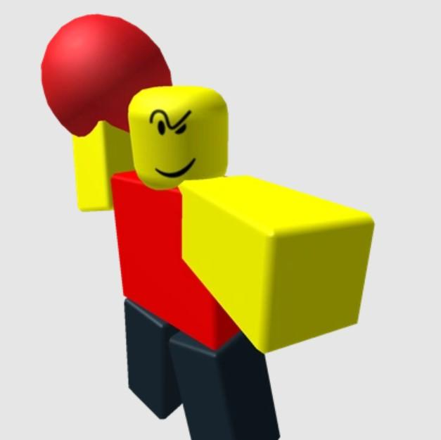
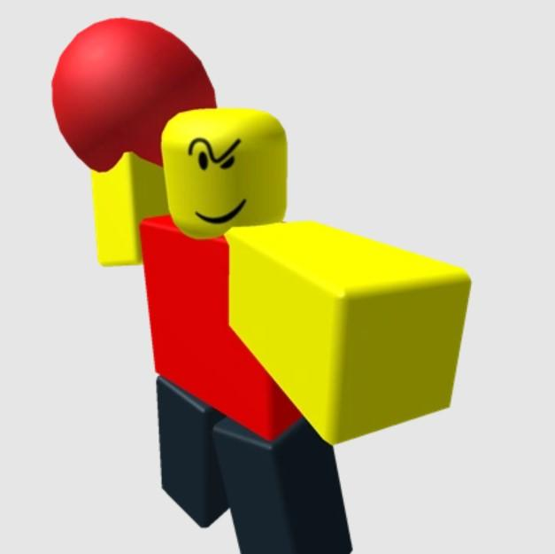
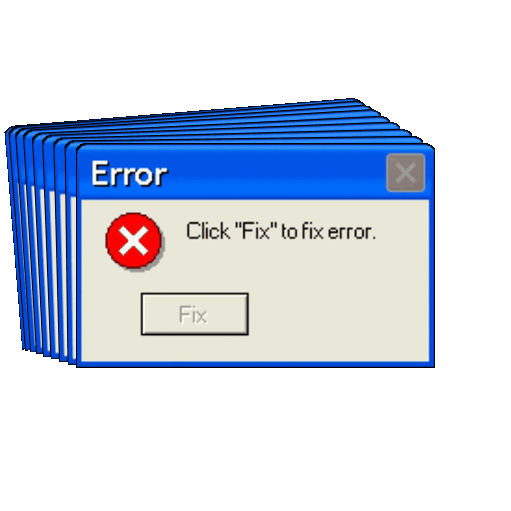
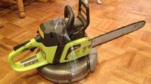
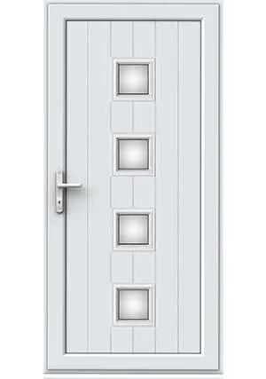
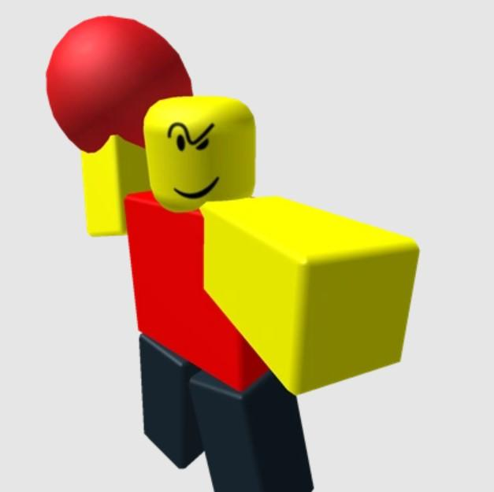

|

 ¨
¨
 


how did you get here?
Please click Spamton
DONT CLICK THIS  
This door leads to the basement

¨

The FitnessGram™ Pacer Test is a multistage aerobic capacity test that progressively gets more difficult as it continues. The 20 meter pacer test will begin in 30 seconds. Line up at the start. The running speed starts slowly, but gets faster each minute after you hear this signal. [beep] A single lap should be completed each time you hear this sound. [ding] Remember to run in a straight line, and run as long as possible. The second time you fail to complete a lap before the sound, your test is over. The test will begin on the word start. On your mark, get ready, start